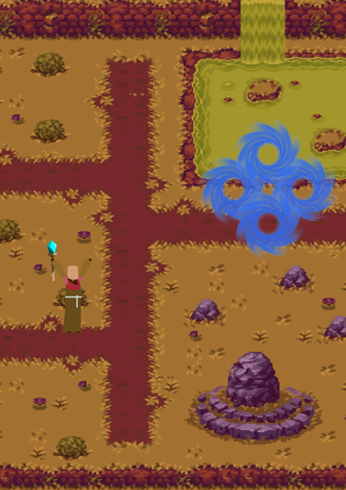

Description:
For this personal research project, the main goal was to figure out realtime multiplayer.
Additionally, other subgoals were: familiarizing myself more with Unity's input & implementing code-based animations.
Features:
- Networking:
As my first ever attempt at tackling multiplayer, I decided to use Netcode for Gameobjects, a framework provided by Unity, to accomplish realtime multiplayer.
In this project emphasis was placed on creating my own network objects/variables, serializing my own data and on clientRPC/serverRPC.
Minimal Quickjoin matchmaking functionality has been implemented.
- State Pattern:
A state pattern is utilized by Pawns to transition between various behaviors. This allows for efficient and organized management of complex game behaviors and reduces code complexity and redundancy.
- Input:
To familiarize myself more with Unity's input system, I took a profound look at the documentation and came up with a code-only implementation using input actions and callbacks.
- Spell Crafting:
A pawn with the wizard component can equip multiple spells. Casting these spells consecutively creates a new combined spell with unique effects, defined by the order in which it was cast.
- Events:
By implementing a singleton event handler, unnecessary update calls on HUD elements can be prevented and maximal decoupling can be ensured. On a change, an event gets invoked and the corresponding UI elements is updated.
- Animations:
Animations are managed entirely within code, evading the spaghetti unity animator entirely. Combine this with each state (see State Pattern) returning a hashed animation string and optimal efficiency has been achieved.
